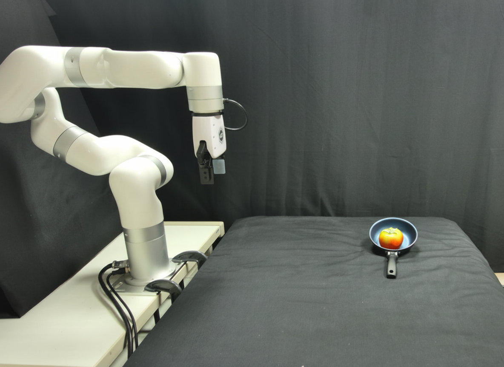

All experiments are conducted in a zero-shot setting, without any task-specific or additional training.
Select Experiment
Goal Visualization

Generalization remains a fundamental challenge in robotic manipulation. To tackle this challenge, recent Vision-Language-Action (VLA) models build policies on top of Vision-Language Models (VLMs), seeking to transfer their open-world semantic knowledge. However, their zero-shot capability lags significantly behind the base VLMs, as the instruction-vision-action data is too limited to cover diverse scenarios, tasks, and robot embodiments. In this work, we present GOVLA, a zero-shot framework that leverages Image-Generative VLMs as world models to generate desired goal states, from which the target object pose is derived to enable generalizable manipulation. The key insight is that object state representation is the golden interface, naturally separating a manipulation system into high-level and low-level policies. This representation abstracts away explicit action annotations, allowing the use of highly generalizable VLMs while simultaneously providing spatial cues for training-free low-level control. To further improve robustness, we introduce a Reflection-through-Synthesis process that iteratively validates and refines the generated goal image before execution. Both simulated and real-world experiments demonstrate that our GOVLA achieves strong performance and inspiring generalizability in manipulation tasks.